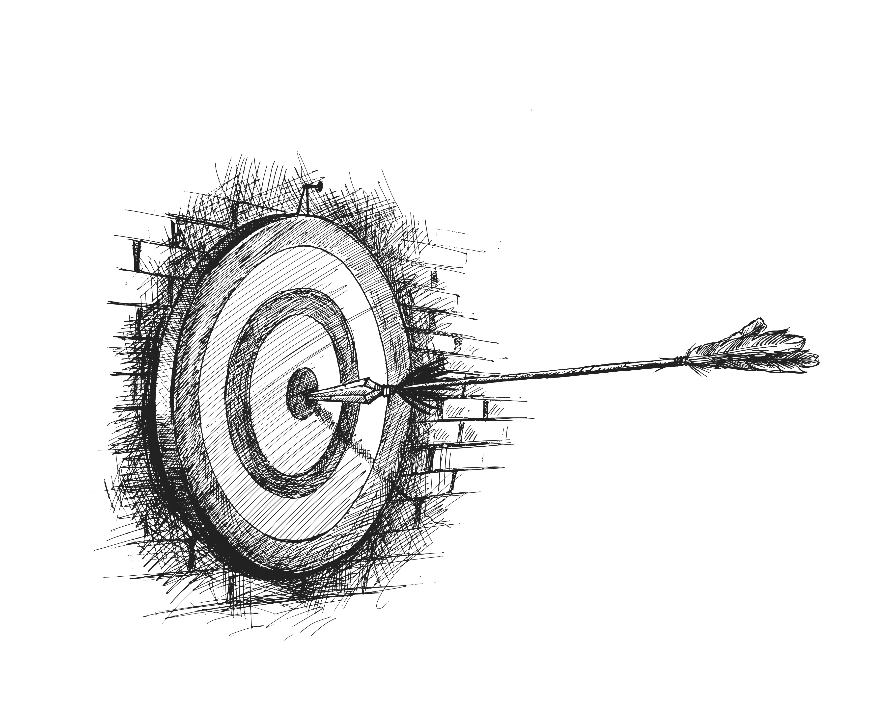

Für wen ist diese Begleitung geeignet?
Meine Arbeit richtet sich an Menschen, die ein Ziel oder einen Weg vor Augen haben und zugleich spüren, dass ihnen die Richtung fehlt. Häufig stecken Menschen innerlich fest, erleben widersprüchliche Gedanken oder suchen Orientierung im Leben oder im beruflichen Kontext.
Vielleicht ist das Ziel da, aber es trägt nicht. Vielleicht denkst du viel nach, ohne wirklich voranzukommen. Oder du bemerkst innere Widersprüche, die unbemerkt Einfluss nehmen.
Dieses Coaching versteht sich als Begleitung für Menschen, die bereit sind, ihre Gedanken ernst zu nehmen und ihnen eine klare Form zu geben – statt sie weiter im Ungefähren wirken zu lassen.
Erkennst du dich wieder?
- Du hast Ziele, doch deine Gedanken geben dir keine klare Richtung.
- Du denkst viel nach, ohne wirklich voranzukommen.
- Du spürst innere Widersprüche, kannst sie aber nicht klar benennen.
- Du hast das Gefühl, dass etwas in dir bremst, ohne greifbar zu sein.
- Du wünschst dir Klarheit, statt weiterer Motivation.
Coaching-Angebote zur persönlichen und beruflichen Orientierung
Meine Angebote verstehen sich nicht als standardisierte Programme und nicht als Lösungen von außen.
Jedes Coaching ist eine individuelle Begleitung, die dort ansetzt, wo Ziele, Gedanken und innere Zusammenhänge
noch keine klare Form haben.
Der gemeinsame Fokus liegt darauf, Gedanken zu ordnen, innere Widersprüche sichtbar zu machen und Zielen eine Richtung zu geben,
die nicht aus Druck entsteht, sondern aus innerer Stimmigkeit.
Coaching zur persönlichen
Orientierung
Im Coaching zur persönlichen Orientierung geht es darum, innere Klarheit zu gewinnen, Zusammenhänge zu verstehen und tragfähige Ziele zu finden.
Im Mittelpunkt steht nicht die Frage „Was sollte ich tun?“, sondern „Was trägt mich wirklich?“
Durch gezielte Impulse werden Gedanken präzisiert, innere Blockaden benennbar und Ziele so formuliert, dass sie innerlich nachvollziehbar und tragfähig werden.
Mehr zur persönlichen OrientierungCoaching zur beruflichen
Orientierung
Berufliche Orientierung entsteht oft dort, wo wichtige Entscheidungen anstehen oder eine berufliche Neuorientierung notwendig wird. Berufliche Themen sind oft komplex, weil äußere Anforderungen und innere Erwartungen nicht immer deckungsgleich sind.
Dieses Coaching schafft einen strukturierten Raum, um berufliche Ziele klar zu formulieren, innere Konflikte sichtbar zu machen und Entscheidungen bewusst zu treffen.
Nicht durch Strategien von außen, sondern durch Klarheit über das, was innerlich stimmig ist.
Mehr zur beruflichen OrientierungCoaching zur persönlichen Orientierung
In diesem Coaching geht es darum, persönliche Ziele, Gedanken und innere Zusammenhänge so zu klären, dass sie innerlich nachvollziehbar werden.
Oft sind Ziele vorhanden, verlieren jedoch ihre Wirkung, weil sie gedanklich unscharf bleiben oder von inneren Widersprüchen begleitet werden. In der gemeinsamen Arbeit werden Gedanken präzisiert, innere Blockaden benennbar und Ziele so formuliert, dass sie nicht aus Druck entstehen, sondern aus innerer Stimmigkeit.
Dieses Coaching versteht sich als begleitender Prozess, der innere Klarheit schafft und persönliche oder berufliche Orientierung ermöglicht – ohne vorgefertigte Lösungen.
Ablauf
-
Kostenfreies Kennenlerngespräch (30 Minuten)
Besprechung deiner Anliegen und Prüfung der Machbarkeit. -
Themenidentifikation & Priorisierung
Du legst fest, welche Themen bearbeitet werden. -
Analyse & Lösungsentwicklung
Wir erarbeiten Wege zum Umgang mit deinen Herausforderungen. -
Zusammenfassung
Am Ende fassen wir die Sitzung zusammen und du erhältst ein Foto vom Whiteboard mit deinen Ergebnissen.
Rahmenbedingungen und Kosten
Coaching zur beruflichen Orientierung
In diesem Coaching geht es darum, berufliche Ziele, Entscheidungen und innere Zusammenhänge so zu klären, dass sie tragfähig und nachvollziehbar werden.
Berufliche Entscheidungen entstehen selten isoliert, sondern im Spannungsfeld aus Verantwortung, Erwartungen und persönlichen Ansprüchen.
In der gemeinsamen Arbeit werden Ziele präzisiert, innere Konflikte sichtbar und Entscheidungen so vorbereitet, dass sie nicht aus Druck entstehen, sondern aus innerer Stimmigkeit.
Dieses Coaching versteht sich als begleitender Prozess, der Klarheit schafft und bewusste berufliche Entscheidungen ermöglicht – ohne vorgefertigte Strategien.
Ablauf
-
Kostenfreies Kennenlerngespräch (30 Minuten)
Besprechung deiner Anliegen und Prüfung der Machbarkeit. -
Analyse des Ist-Zustands
Du schilderst deine aktuelle berufliche Situation. -
Erarbeitung des Wunsch-Zustands
Wir formulieren gemeinsam tragfähige berufliche Ziele. -
Stärken- und Erfolgsanalyse
Wir identifizieren vorhandene Ressourcen und Kompetenzen. -
Strategieentwicklung
Entwicklung konkreter Schritte zur Zielerreichung. -
Zusammenfassung
Gemeinsame Zusammenfassung inkl. Foto vom Whiteboard.
Rahmenbedingungen und Kosten
Über mich – Ismail Özkabak
Coach für persönliche und berufliche Orientierung. Dein Erfolg ist mein Ziel.
Ich bin Ismail Özkabak, Coach und Berater mit über
10 Jahren Erfahrung in der Arbeit mit Menschen.
Meine Mission: Dir zu helfen, deine Ziele zu erreichen,
Selbstvertrauen aufzubauen und den Mut zu entwickeln,
neue Wege zu gehen.
Coaching verstehe ich nicht als das Geben von Lösungen, sondern als eine Form der Begleitung, in der Gedanken präzisiert, innere Zusammenhänge sichtbar und Ziele in eine tragfähige Form gebracht werden.
Der Ausgangspunkt meiner Arbeit ist dabei immer derselbe: Der Mensch selbst ist der Experte seiner Themen. Meine Aufgabe besteht darin, durch Struktur, gezielte Impulse und Klarheit einen Raum zu schaffen, in dem Bewusstheit entstehen kann.
Veränderung beginnt dort, wo Gedanken ernst genommen werden und innere Stimmigkeit wichtiger wird als äußere Vorgaben.
Die Gedanken und Prinzipien, die meine Arbeit zur Orientierung und Zielerreichung prägen, habe ich auch in einem Buch festgehalten.
So arbeiten wir zusammen

Schritt 130-minütiges Kennenlernen
Der Coaching-Prozess unterstützt dabei, Gedanken zu ordnen, Entscheidungsfindung zu erleichtern und Klarheit Schritt für Schritt zu entwickeln. In einem kostenlosen 30-minütigen Kennenlerngespräch besprechen wir deine Ziele, klären die Rahmenbedingungen und prüfen gemeinsam, ob mein Coaching-Ansatz zu deinem Anliegen passt.
So erhältst du einen klaren Eindruck von meiner Arbeitsweise und kannst in Ruhe entscheiden, ob dieser Weg für dich stimmig ist.
Strategische Planung
In dieser Phase entwickeln wir gemeinsam eine klare Ausrichtung und tragfähige nächste Schritte, die zu deinen Zielen passen.
Dabei werden sowohl deine Stärken als auch mögliche innere und äußere Spannungsfelder berücksichtigt.
Umsetzung & Erfolg
In dieser Phase setzt du die gemeinsam entwickelten Schritte in deinem eigenen Tempo um – mit meiner begleitenden Unterstützung.
Dabei bleibt Raum für Reflexion, Anpassung und Klärung, damit Entscheidungen und Schritte innerlich tragfähig bleiben.
So wird aus der Planung messbarer Erfolg in deiner persönlichen oder beruflichen Weiterentwicklung.
Häufig gestellte Fragen
In diesem Bereich findest du Antworten auf häufige Fragen zur Begleitung, zum Ablauf und zu den Rahmenbedingungen.
Solltest du darüber hinaus Fragen haben, klären wir diese gern persönlich im Kennenlerngespräch.
Wie lange dauert das Coaching?
Die Dauer hängt von deinem persönlichen Anliegen und Ziel ab. Viele Klientinnen und Klienten gewinnen bereits nach wenigen Sitzungen spürbar mehr Klarheit und Orientierung.
Die Begleitung ist flexibel und kann punktuell oder als Prozess gestaltet werden.
Muss ich für das Coaching viel Zeit investieren?
Nein. Bereits einzelne Sitzungen von 60 Minuten können wertvolle Impulse geben.
Du entscheidest selbst, ob du eine kurze Begleitung oder einen vertiefenden Prozess wünschst.
Ist das Erstgespräch wirklich kostenlos?
Ja. Das 30-minütige Kennenlerngespräch ist kostenlos und unverbindlich.
Wir klären dein Anliegen und prüfen gemeinsam, ob meine Arbeitsweise für dich passt.
Wie finde ich heraus, ob Coaching für mich richtig ist?
Coaching ist sinnvoll, wenn Ziele, Gedanken oder Entscheidungen innerlich nicht klar oder widersprüchlich sind.
Meine Begleitung richtet sich an Menschen, die Klarheit, Ausrichtung und innere Stimmigkeit suchen.
Welche Themen kann ich im Coaching bearbeiten?
Typische Themen sind Orientierung, Entscheidungen, Selbstvertrauen, innere Sicherheit, Neuorientierung und Entwicklung.
Entscheidend ist dein Wunsch nach Klarheit und innerer Stimmigkeit.
Hilft Coaching auch bei beruflicher Neuorientierung?
Ja. Coaching unterstützt dich dabei, berufliche Veränderungen bewusst und stimmig zu gestalten.
Gemeinsam entwickeln wir eine klare innere Ausrichtung für deine nächsten Schritte.
Kann ich Coaching-Sitzungen auch online wahrnehmen?
Ja. Neben persönlichen Terminen in Gräfenberg bei Forchheim biete ich auch Online-Coaching zur persönlichen und beruflichen Orientierung an.
So kannst du flexibel und ortsunabhängig an deinen Themen arbeiten.
Was kostet das Coaching?
Das Coaching kostet 80 € pro Stunde.
Das Kennenlerngespräch (30 Minuten) ist kostenlos und unverbindlich.
Einladung zum Kennenlernen
Wenn du das Gefühl hast, dass deine Gedanken, Ziele oder Entscheidungen noch keine klare Form haben, kann ein persönliches Gespräch sinnvoll sein. Das ist persönlich in Gräfenberg,telefonisch oder online möglich. In einem kostenfreien Kennenlerngespräch haben wir Raum, dein Anliegen zu klären und gemeinsam zu prüfen, ob eine Zusammenarbeit für dich stimmig ist.
Das Gespräch dauert etwa 30 Minuten und findet persönlich oder telefonisch statt.
Kontakt
Am Gesteiger 16 · 91322 Gräfenberg
Telefon: 0160 911 099 35
E-Mail: kontakt@bzpw.de
Alternativ kannst du auch das Kontaktformular nutzen.